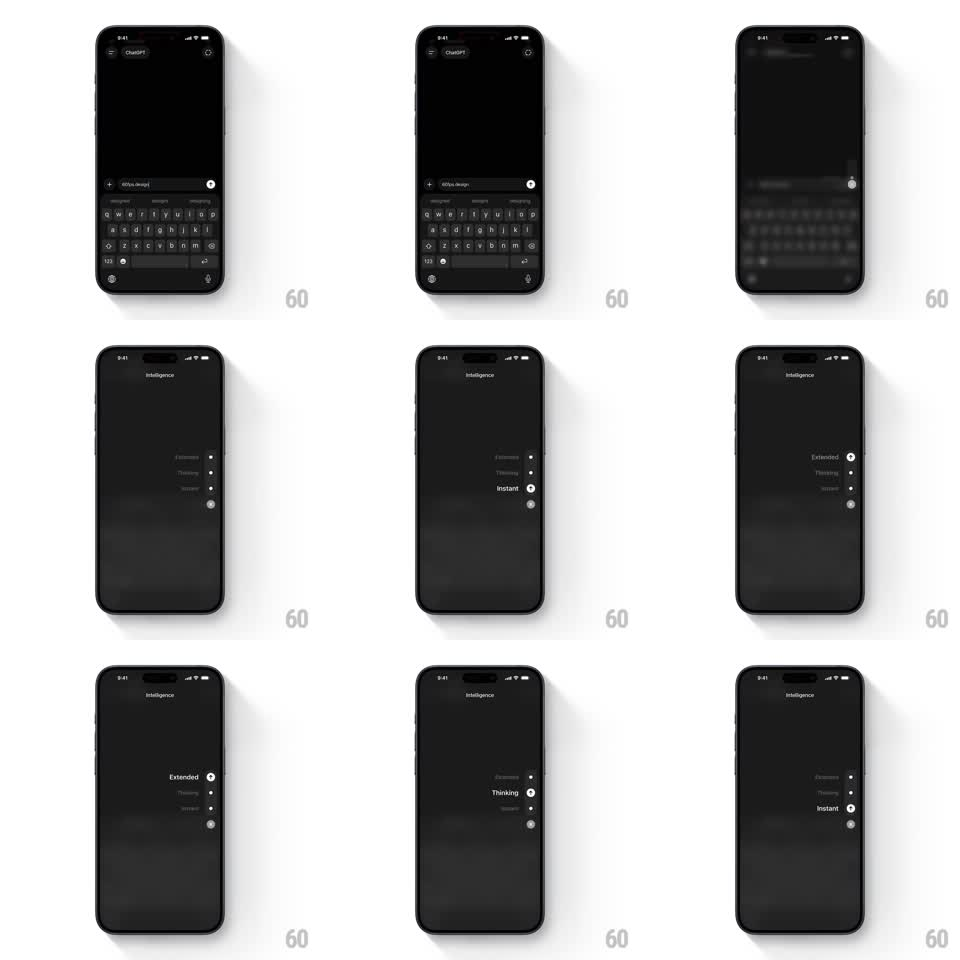

Media
Frame-by-frame

Rebuild this interaction 1:1: ChatGPT's intelligence picker - long-pressing the composer blurs the chat into a full-screen picker where a vertical list (Extended, Thinking, Instant) rides a dot-track slider that follows your drag with elastic snapping.

Rebuild this interaction 1:1: ChatGPT's intelligence picker - long-pressing the composer blurs the chat into a full-screen picker where a vertical list (Extended, Thinking, Instant) rides a dot-track slider that follows your drag with elastic snapping. ## Integration Integration: stack-agnostic spec - springs given as stiffness/damping, timed motions as duration + curve; map every value to your framework and animation library of choice. ## Scene Chat screen with keyboard up. On long-press the whole UI blurs and dims, the keyboard sinks away, and the picker fades in: "Intelligence" eyebrow top-center, a vertical list of option labels center-right, and a vertical track of small dots aligned to them with a larger indicator dot marking the selection. ## Motion spec Pattern: long-press overlay with drag-to-snap vertical option slider. - Entrance: backdrop blur ramps 0 -> 24px over 250ms; list items fade in from 8px below with 50ms stagger; keyboard dismisses in the same beat. - The indicator dot tracks the finger while dragging (no lag), stretching into a small capsule in the drag direction (scaleY 1.4 while moving). - Option labels react to proximity: the nearest label brightens to full white and bumps to its active size (scale 1.0 -> 1.15); others stay dim grey. - On release, the dot snaps to the nearest slot (spring ~300/18, one soft overshoot) and the label locks to its active state. - Tap outside or the selection itself dismisses: blur ramps out, chat returns (200ms). ## Calibration - The drag must feel fluid - the dot follows the finger 1:1, the snap only happens on release. - Labels morph weight/size smoothly; there is no hard swap between dim and active. ## Reduced motion No blur ramp; the picker crossfades in (200ms) and the dot snaps without stretch. ## Don't miss - The dot's elastic squash while dragging is the tactile signature. - Option order stays fixed; only the indicator and label emphasis move.